Baltra · candidatos EN_CORRECCION
Cuatro atlas nativos / 48 fases. Preview diagnóstica; no aprobación. Comparación de juego al mismo escenario y escala abajo.
Atlas
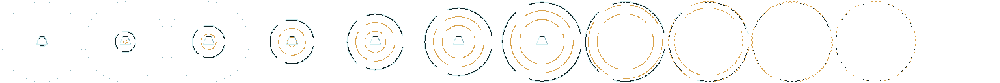
Atlas
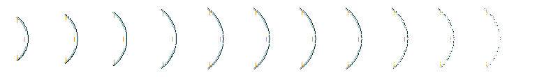
Atlas
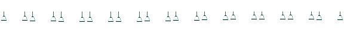
Atlas
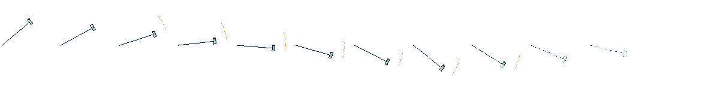
mobile habilidad 0
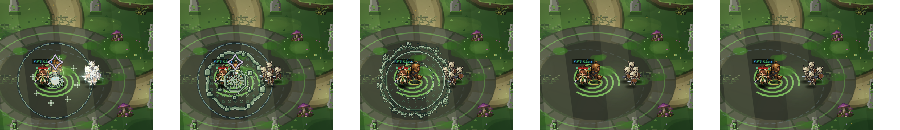
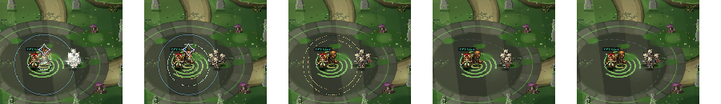
mobile habilidad 1
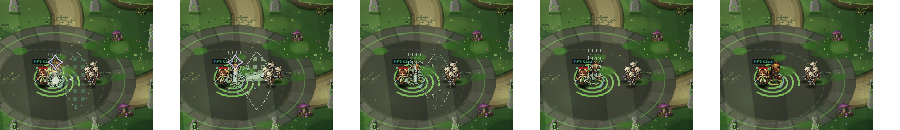
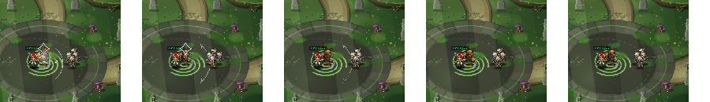
mobile habilidad 2
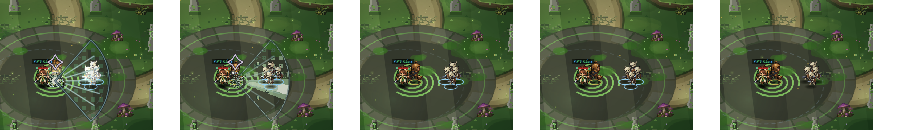
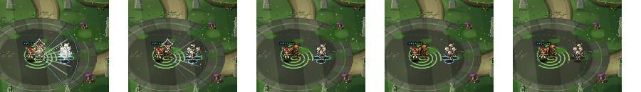
mobile habilidad 3
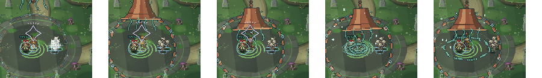

horizontal habilidad 0
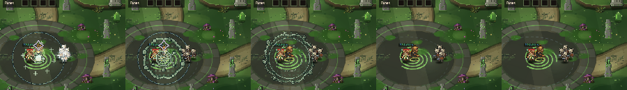
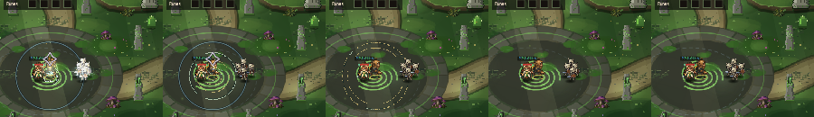
horizontal habilidad 1
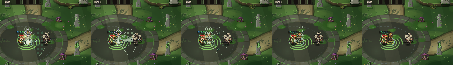
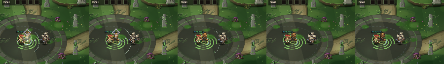
horizontal habilidad 2
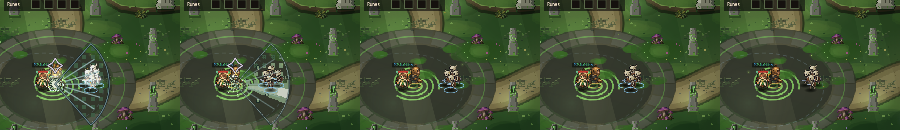
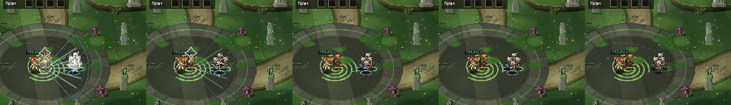
horizontal habilidad 3

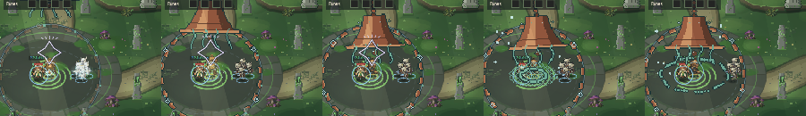